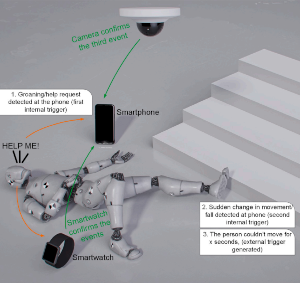
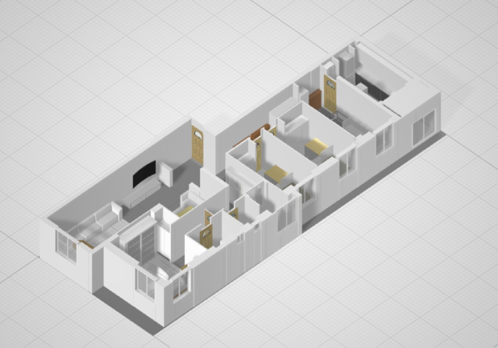
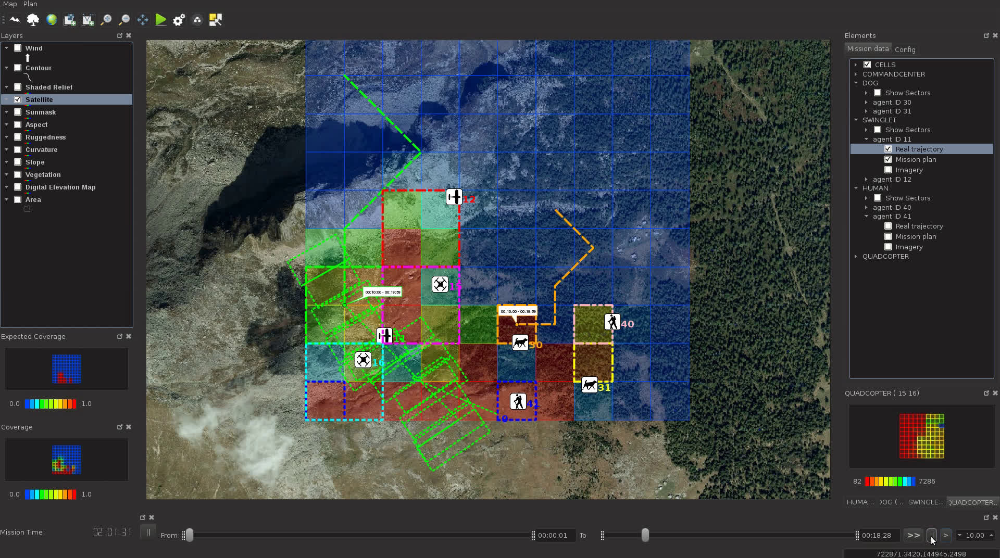

Feo-Flushing
Assistant Professor, Computer Science
Carnegie Mellon University in Qatar
Office: CMUQ 1005
Phone: +974 4454 6667
Email: efeoflus [at] andrew.cmu.edu

I am an assistant teaching professor in the Computer Science program at Carnegie Mellon University in Qatar
My research focuses on the study and implementation of complex cyber-physical
systems: systems that are composed of hardware and software elements.
Some of the topics I have contributed to include mobile wireless
networking, mobile robotics, multi-robot systems, and edge computing.
I'm always looking for highly motivated students. If you are interested, please email me directly.
Recent News
- New QNRF Project Award: HyBrush: A Hybrid UAV Brushing System for PV monitoring and cleaning
- New QNRF Project Award: Autonomous PV Cleaning and Inspection System for Hot Desert Weather ConditionsCMUQ News
Publications
|  |
Task offloading in edge computing for machine learning-based smart healthcare
[Article]
Computer Networks (2021)
|
|  |
Prediction of Indoor Wireless Coverage from
3D Floor Plans Using Deep Convolutional Neural Networks
[PDF]
2021 IEEE 46th Conference on Local Computer Networks (LCN)
|
|  |
Spatially-distributed missions with heterogeneous multi-robot teams
[PDF] [Online]
IEEE Access (2021)
|
Teaching
Bio
I completed my PhD in Informatics at the Dalle Molle Institute for Artificial Intelligence (IDSIA) in Lugano in 2017. At IDSIA , I was part of the robotics lab and I worked on several multidisciplinary projects, including the SWARMIX project and NCCR Robotics under the supervision of Professor Luca M. Gambardella. Before starting my PhD, I received an Erasmus Mundus Master scholarship for the European Master in Informatics programme, and completed a MSc. in Informatics from University of Trento, Italy (2010) and a MSc. in Software System Engineering from RWTH-Aachen University, Germany (2010).